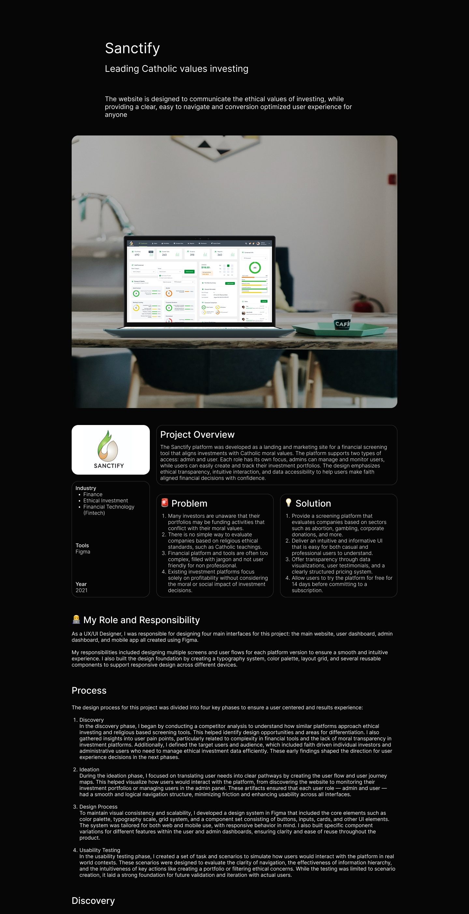
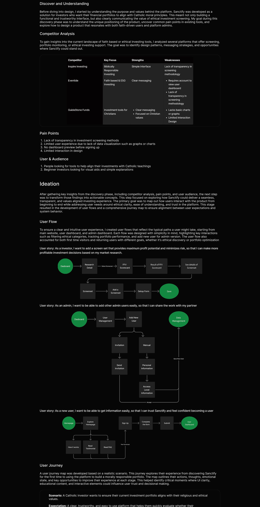
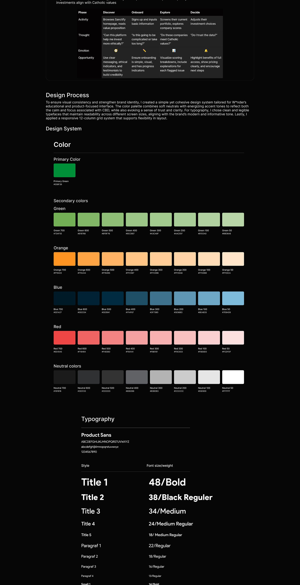
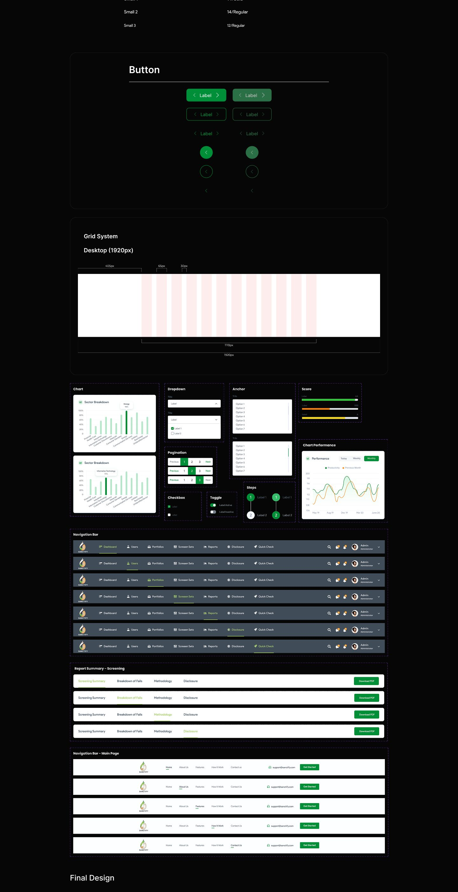
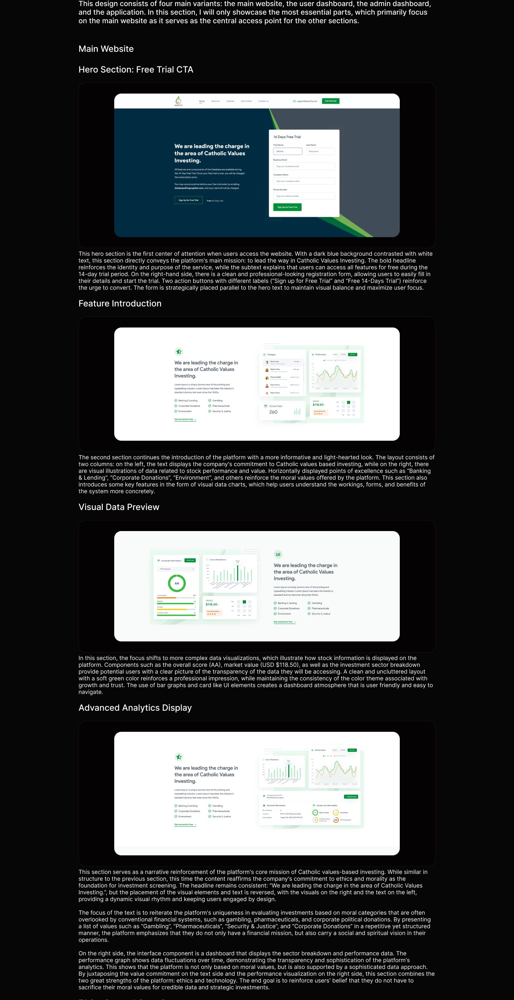
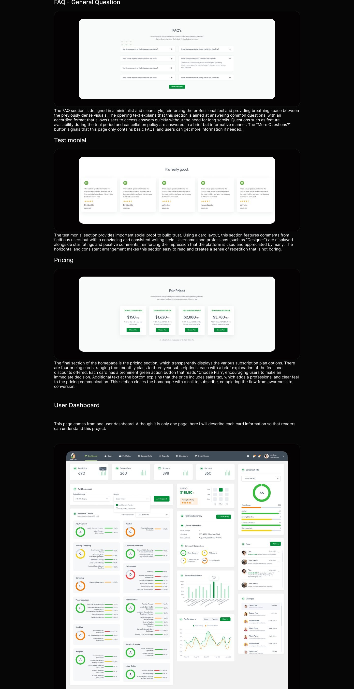
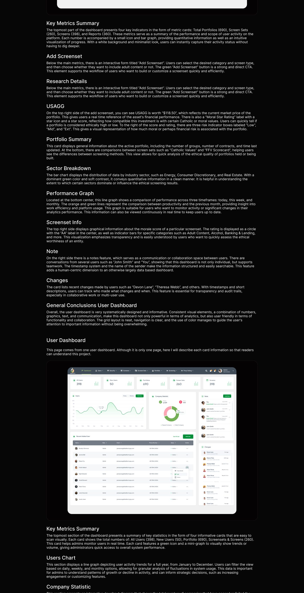
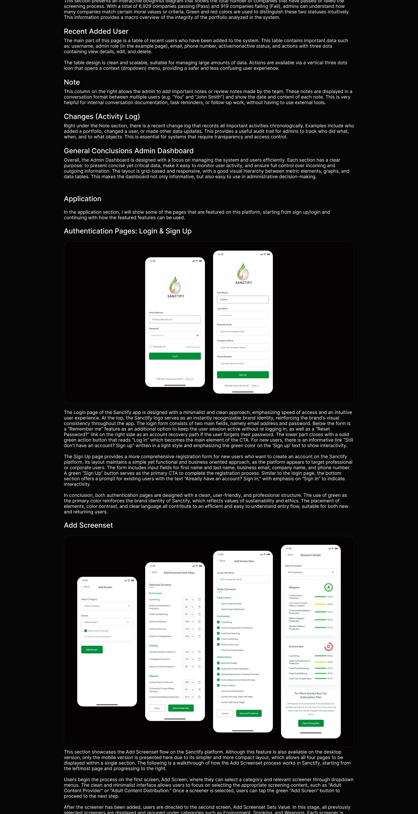
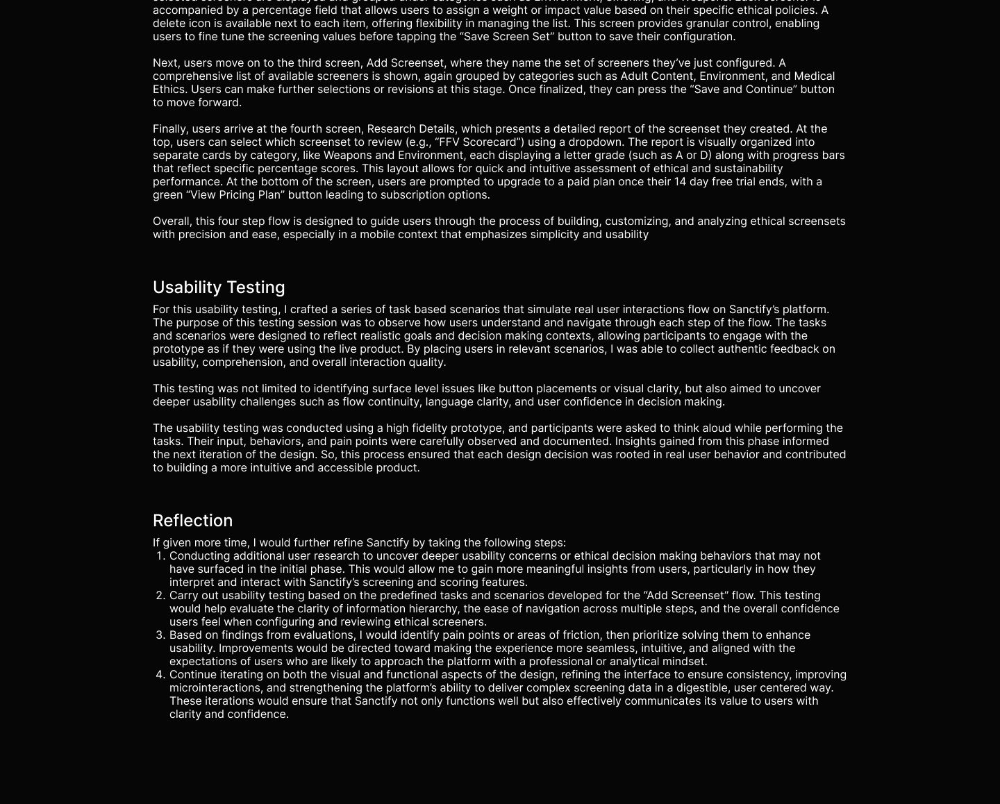

Analytics dashboard
Sanctify
A data-heavy dashboard platform designed to stay calm at density.
Overview
Sanctify is the densest project in this portfolio: dashboards, data tables, and charts that have to stay readable while carrying real workloads. The green system keeps hierarchy legible, with numbers doing the talking and chrome kept to a minimum.
The case study covers the research and architecture behind the dashboards, the component system that keeps every table and chart consistent, and the mobile companion screens.
Inside the case study
- Research and personas
- Information architecture
- Dashboard UI
- Data tables and charts
- Design system
- Mobile screens
The case study
The full annotated board: research, flows, explorations, and final screens.








